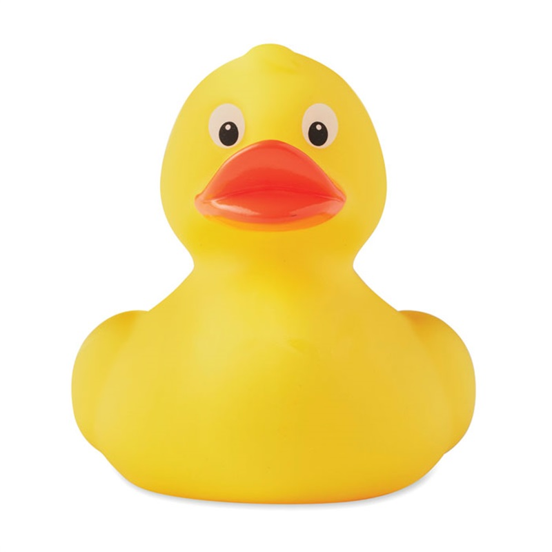

Curriculum Vita-eend

- Naam
- Voornaam Tussenvoegsel Achternaam
- Geboortedatum
- 28-02-1976
- Zwemdiploma's
- A, B, C
Vaardigheden
- HTML
- PHP
- JS
- SQL
- GIT
Favorieten
- GitHub
- Visual Studio Code
- Microsoft Teams
- Mama appelsap
Educatie
| Kwalificatie |
Instelling |
Diploma |
| Zwemdiploma A |
Badderplas |
1980 |
Werkervaring
| Bedrijf |
Functie |
Periode |
| Geen werkervaring |
Referenties
"Eend is een serieus en hardwerkend beestje" - Niemand, 2020
"Ik houd ervan om dit eendje te wassen" - Badzeep, 2010
"Zwemmen in het water, spetter spitter spater" - Alfred J. Kwak